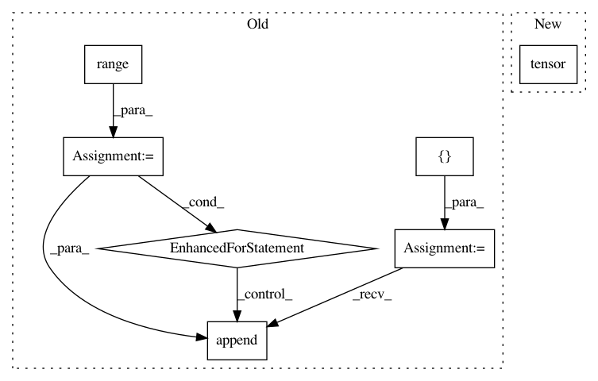

4021cdc2b0280973776365d255b0dd8bff5513e8,ml/rl/test/evaluation/test_evaluation_data_page.py,FakeSeq2SlateTransformerNet,forward,#FakeSeq2SlateTransformerNet#Any#Any#Any#,68
Before Change
// The creation of evaluation data pages only uses these specific arguments
assert greedy and mode == Seq2SlateMode.RANK_MODE
batch_size = input.state.float_features.shape[0]
ranked_tgt_out_idx = []
for i in range(batch_size):
ranked_tgt_out_idx.append(self._forward(input.state.float_features[i]))
return rlt.RankingOutput(
ranked_tgt_out_idx=torch.tensor(ranked_tgt_out_idx).long()
)
After Change
return rlt.RankingOutput(
ranked_tgt_out_idx=torch.tensor([[2, 3], [3, 2], [2, 3]]).long()
)
return rlt.RankingOutput(log_probs=torch.log(torch.tensor([0.4, 0.3, 0.7])))
class TestEvaluationDataPage(unittest.TestCase):
In pattern: SUPERPATTERN
Frequency: 3
Non-data size: 7
Instances
Project Name: facebookresearch/Horizon
Commit Name: 4021cdc2b0280973776365d255b0dd8bff5513e8
Time: 2020-02-26
Author: czxttkl@fb.com
File Name: ml/rl/test/evaluation/test_evaluation_data_page.py
Class Name: FakeSeq2SlateTransformerNet
Method Name: forward
Project Name: snorkel-team/snorkel
Commit Name: b9e27136a5e80850df7859b8f3ca23d396f1b009
Time: 2018-05-04
Author: stephenhbach@gmail.com
File Name: snorkel/learning/pytorch/rnn/lstm.py
Class Name: LSTM
Method Name: forward
Project Name: PIQuIL/QuCumber
Commit Name: 9a2903dac097a7f3633f6c828533ed385c7159c9
Time: 2019-07-17
Author: emerali@users.noreply.github.com
File Name: qucumber/utils/data.py
Class Name:
Method Name: extract_refbasis_samples